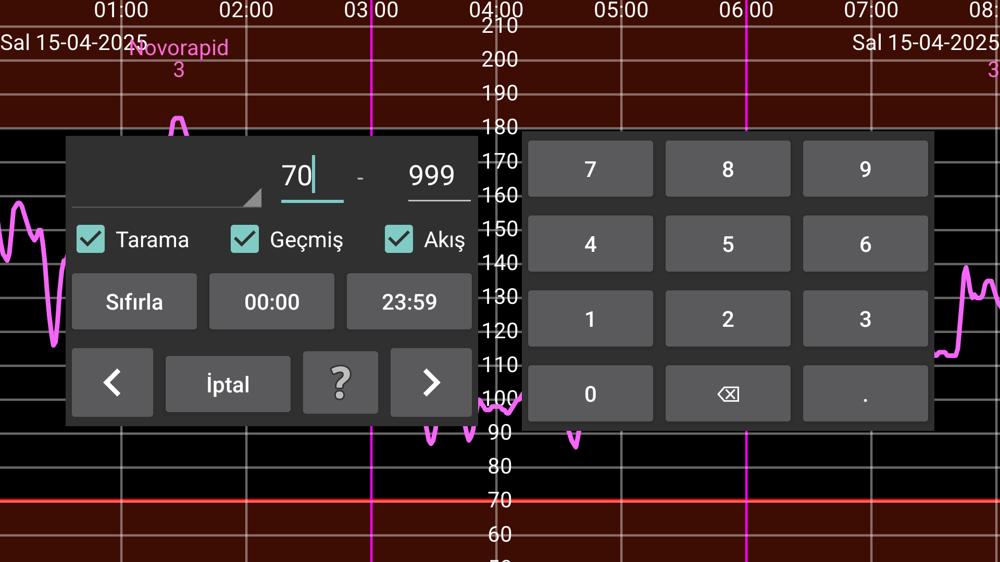

Glikoz değerlerini ve girilen sayıları bulmak için arama kullanılabilir.
Değerleri arama verilen sayılar arasında. Örnek: 10 ile 999 arasındaki değerleri aramak için 10 – 999.
Glikoz değerleri Tarama, Geçmiş ve Akış olarak ayrılır.
Tarama: Taramadan hemen sonra gösterilen değer.
Geçmiş: Sensörde kaydedilen ve bu uygulamaya aktarılan periyodik ölçümler. Freestyle Libre 2 sensörleri her 15 dakikada bir değer kaydeder ve NFC ile bu uygulamaya aktarır. Freestyle Libre 3 sensörleri, her 5 dakikada bir değer kaydeder ve Bluetooth ile aktarır.
Akış: Freestyle Libre 2 sensöründen bu uygulamaya Bluetooth ile gönderilen 1 dakikalık periyodik ölçümler.
Eğer insülin girdiyseniz, tüketim veya etkinlik verilerini, ilgili öğeyi seçerek arayabilirsiniz label döndürücüde ve ilgilenilen sayı aralığını belirtin: örneğin 50 ile 100 arasında döngü.
Ayrıca şunu da belirtebilirsiniz: günün saati ilgilendiğiniz şey. Eğer akşam 22:00 ile sabah 07:00 arasında hipolarla ilgileniyorsanız, ilk defa basarsınız göster (başlangıçta 00:00 olarak görüntülenir) ve bunu 22:00 olarak değiştirin ve saniyeyi değiştirinzaman göstergesi07:00'a kadar (Ayrıca Akış ve/veya Geçmiş'i seçmeli ve 0 ila 3,9 mmol/L (70 mg/dL) arasında bir değer aralığı belirtmelisiniz).
Bir oka dokunulduğunda, belirtilen yönde arama başlar.
Sıfırla tüm arama değerlerini başlangıçtaki değerlerine ayarlar.
Ayarlar altında sayı etiketlerihangi etiketin (örneğin Karbonhidrat) yemeklerle ilişkilendirileceğini seçebilirsiniz. Eğer "Yeni Tutar"'da bu etiketi seçerseniz bir "Yemek" düğmesi belirir. Dokunduktan sonra, malzemelerinden bir öğün girebilirsiniz. Eğer buradaki spinner'da bu etiketi seçerseniz, ekranın en üstünde bir kutu çıkacaktır, burada aramak için bir malzeme belirleyebilirsiniz ve isteğe bağlı olarak o malzemenin minimum miktarını belirtebilirsiniz.